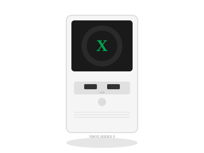

2020 年发布
Xbox Series S
史上最小Xbox · 全数字 · $299入门次世代
$299
首发价格
1440p
目标分辨率
10GB
GDDR6
512GB
SSD
📖 历史与背景
2020年11月10日，微软同步发售Xbox Series S和Series X——双主机策略。Series S定位入门级次世代，取消了光驱（全数字版），目标分辨率1440p（最高1440p@120fps），搭载10GB GDDR6内存和512GB定制NVMe SSD。
Series S的零售价仅$299，是当时最便宜的"次世代"主机。微软的战略是：Series S作为XGP（Xbox Game Pass）的完美载体——玩家以极低的入门成本就能享受上百款次世代游戏。这种策略在发展中国家（包括巴西、墨西哥等）尤为成功。
Series S的体积是Xbox史上最小的——比Series X小60%，比Xbox One S小40%。白色简洁的外观和一个巨大的黑色圆孔散热（视觉上像一个扬声器）让它非常独特。但由于仅10GB内存和较低GPU规格，部分游戏在Series S上的表现比Series X差不少（分辨率差异、某些光追被砍）。
⚙️ 硬件规格
CPU
AMD Zen 2 8核 3.6GHz
GPU
RDNA 2 4 TFLOPS
内存
10GB GDDR6
SSD
512GB NVMe（2.4GB/s）
目标分辨率
1440p @ 120fps
光驱
无（全数字版）
尺寸
史上最小Xbox（275×151×63mm）
XGP
Xbox Game Pass订阅核心设备
🏆 市场表现
- 双主机战略：Series S作为低端入口（$299）与Series X（$499）形成产品矩阵，覆盖不同预算用户
- XGP最佳载体：Series S专为XGP订阅设计，无光驱的设计逼迫玩家拥抱数字订阅模式
- 争议：部分开发者反映Series S的10GB内存和较弱GPU是跨平台开发的瓶颈——特别是要求支持光线追踪的次世代游戏
- 销量：Series S的销量占Xbox Series全系列约30-40%，在低价市场中表现不错
- 游戏差异：相同游戏在Series X上支持4K+光追，在Series S上可能仅有1440p或1080p且无光追
💡 趣闻
- Series S的外观被玩家戏称为"桌面小音箱"——白色的方块+中间的巨大黑色圆孔，确实很像一台便携音箱
- Series S是Microsoft主机中第一个全数字版——没有光驱的设计让微软不得不加大对云游戏和XGP的宣传力度
- 早期的Series S在部分游戏中仅提供1080p@30fps——与最初的"1440p@120fps"宣传差异让玩家有些失望